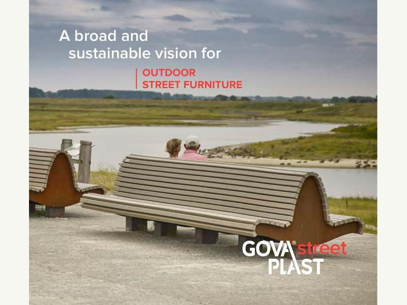
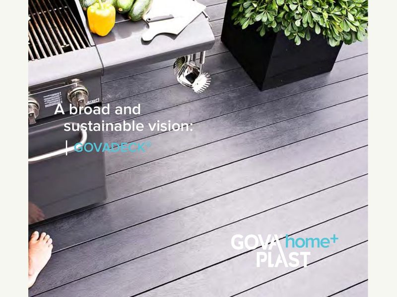
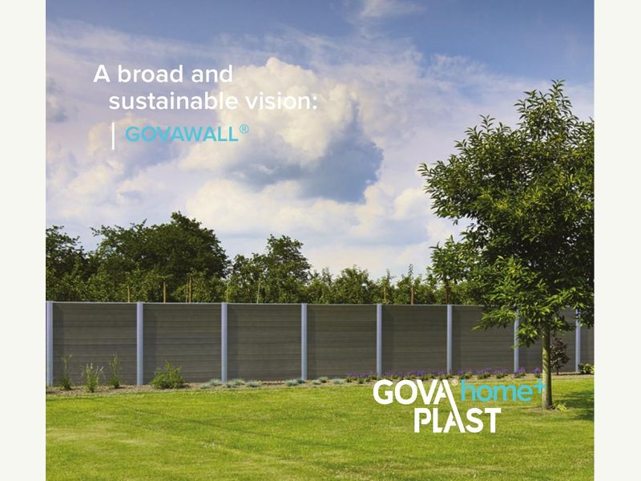

Govaplast
Pārstrādātas plastmasas risinājumi
Govaplast piedāvā pārstrādātas plastmasas āra mēbeles, terases, žogus, profilus un citus ilgizturīgus risinājumus. Pilno produktu klāstu uztur ražotājs.

Govaplast Street
Āra mēbeles
Soli, galdi, puķu kastes, urnas un citi publiskās ārtelpas elementi.
Apskatīt Govaplast Street ↗
Govaplast Garden
Terases un žogi
Terases dēļi, fasādes un norobežojumu risinājumi.
Apskatīt Govaplast Garden ↗
Govaplast
Dēļi, profili un stabi
Pamatmateriāli individuāliem un tehniskiem projektiem.
Apskatīt materiālus ↗Projektam
Vajadzīgs konkrēts materiāls vai risinājums?
Apraksti vietu, apjomu un pielietojumu — palīdzēsim piemeklēt piemērotu Govaplast produktu.